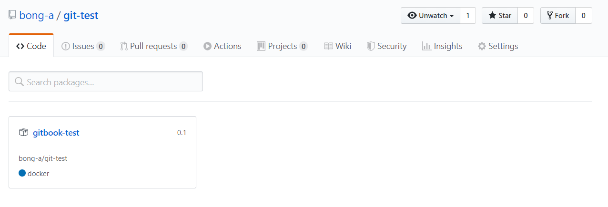
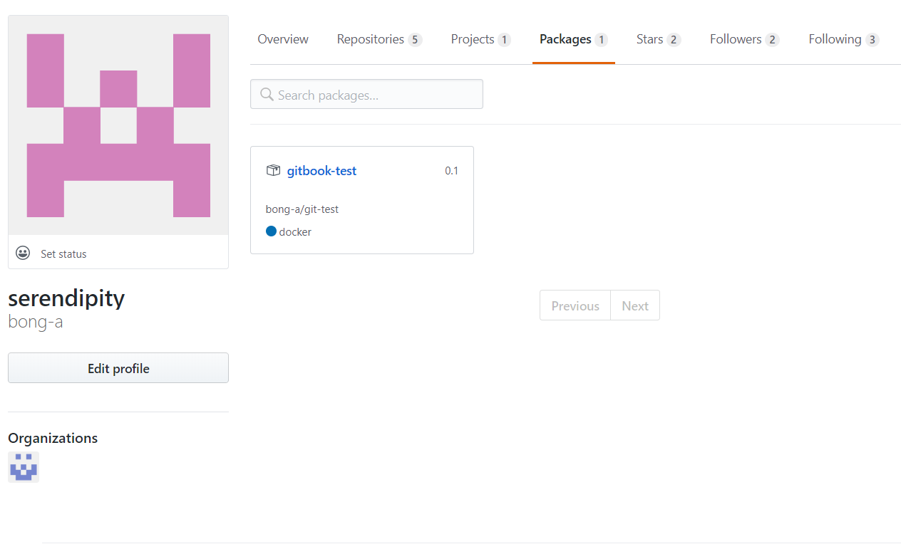

GitHub Packages 사용하여 도커 구성하기
Created: Nov 26, 2019 10:24 PM Created By: 봉아 임 Last Edited By: 봉아 임 Last Edited Time: Nov 26, 2019 11:19 PM Status: In Progress 🙌
본 문서는 https://help.github.com/en/github/managing-packages-with-github-packages/configuring-docker-for-use-with-github-packages를 기반으로 번역 또는 수정되었습니다.
GitHub Packages를 사용하여 도커 이미지 배포 및 반영하기
Authenticating to GitHub Packages
GitHub Packages에 설치, 삭제, 배포하기 위해서는 access token이 필요하다.
GitHub Packages나 GitHub API에 인증하기 위해 개인 access token을 사용할수있다.
또는 GitHub Actions workflow를 이용하여 GITHUB_TOKEN을 인증하는데 사용할 수 있다.
개인 Access Token으로 인증하기
반드시 패키지 배포 및 설치하기 위해 개인 access token를 사용해야한다.
자세한 내용은 아래 페이지 참고 할 것
docker명령어를 통해 GitHub Packages with Docker에 인증할 수 있다.
USERNAME은 당연히 사용자계정이름으로 바꿔줘야 하며, TOKEN은 개인 access token으로 바꿔줘야한다.
$ docker login docker.pkg.github.com -u USERNAME -p TOKENGITHUB_TOKEN으로 인증하기
GitHub Actions workflow를 사용한다면, GITHUB_TOKEN을 GitHub Packages에 패키지 배포하는데 사용할 수 있다.
personal access token 관리 및 저장 필요없이 GITHUB_TOKEN만으로 접근이 가능하다.
자세한 내용은 아래 페이지 참고할 것.
Authenticating with the GITHUB_TOKEN
Publishing a package(패키지 배포)
도커에서는 이미지 배포?쯤 되려나
GitHub Packages는 레포지토리당 여러 도커 이미지(상위레벨의 도커 이미지)를 지원한다.
한 레포지토리는 수 많은 이미지 태그를 가질 수 있다.
10GB이상의 도커 이미지 설치 및 배포는 느린 서비스를 유발할 수 있다. ( =너무 큰 이미지 쓰지마라)
대문자는 지원안하므로 소문자를 써야한다. 대문자가 포함되면 그냥 소문자로 바꿔서 입력하면 된다.
- 배포할 도커 이미지 ID 확인 - docker images
tagging
$ docker tag IMAGE_ID docker.pkg.github.com/OWNER/REPOSITORY/IMAGE_NAME:VERSION- OWNER : 사용자 이름
- REPOSITORY : 프로젝트를 포함하고 있는 repository 이름
- IMAGES_NAME: 패키지 또는 이미지 이름
- VERSION : 빌드 버전 (바꿀수 없으니 신중해야한다.)
2-1. 빌드
# Build the image with docker.pkg.github.com/OWNER/REPOSITORY/IMAGE_NAME:VERSION
# Assumes Dockerfile resides in the current working directory (.)
$ docker build -t docker.pkg.github.com/octocat/octo-app/monalisa:1.0 .
# Push the image to GitHub Packages
$ docker push docker.pkg.github.com/octocat/octo-app/monalisa:1.0도커 이미지 배포
$ docker push docker.pkg.github.com/OWNER/REPOSITORY/IMAGE_NAME:VERSION
패키지 설치하기(도커 이미지 가져오기)
$ docker pull위 명령어를 이용하여 GitHub Packages로부터 이미지 설치 가능하다.
$ docker pull docker.pkg.github.com/OWNER/REPOSITORY/IMAGE_NAME:TAG_NAME패키지 삭제
레파지토리 패키지 보기
배포한 패키지는 해당 레포지토리 → packages에서 볼 수 있다.

뿐만 아니라 본인 계정 프로필 화면에서도 볼 수있다.
